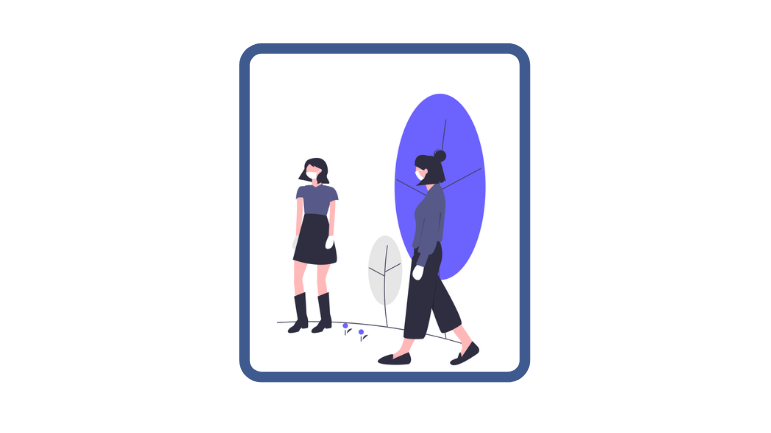

KESEHATAN IMUN UNTUK HADAPI VARIAN BARU COVID-19
Sudah lebih dari satu tahun, pandemi Covid-19 masih terus menyerang penduduk dunia. Indonesia sedang mengalami penyebaran kasus Covid-19 yang meningkat secara pesat akhir-akhir ini membuat seluruh masyarakat merasa prihatin, pasalnya upaya pemerintah untuk menanggulangi pandemi dan proses pemulihan ekonomi kembali dapat terganggu.
Saat ini terdapat lima variant of concern (VOC) varian virus penyebab Covid-19 yang sudah ditemukan di dunia, yakni varian Inggris, varian Afrika Selatan, varian India, varian Brasil, dan varian California. Suatu varian disebut VOC jika sudah terbukti secara penelitian ada satu atau lebih tiga efek yang dikhawatirkan, yakni lebih mudah menular, lebih mematikan, dan membuat efektivitas vaksin berkurang. Varian virus penyebab Covid-19 yang sudah ditemukan di Indonesia baik dari kasus impor maupun transmisi lokal yakni varian dari Inggris, Afrika Selatan, dan dari India.
Upaya untuk mengalahkan penyebaran dan penularan Covid-19 di dunia tidak mudah. Namun, beragam upaya terus dilakukan para ahli dan penduduk global demi mengakhiri ancaman virus corona yang terus menyerang bertubi-tubi. Di beberapa negara, termasuk Indonesia, pemerintah membuat pendoman dan protokol kesehatan untuk menghadapi COVID-19 dan konsisten menjaga kesehatan imun dan iman. Di negara kita, protokol kesehatan ini dikenal dengan sebutan 5M. Sudah tahu apa saja protokol kesehatan 5M untuk membantu pencegahan penularan virus corona?
MENCUCI
TANGAN
Rutin mencuci tangan hingga bersih merupakan salah satu protokol kesehatan yang cukup efektif untuk mencegah penularan covid-19. Untuk hasil yang maksimal, cucilah tangan selama minimal 20 detik terutama saat sebelum memasak atau makan, setelah menggunakan kamar kecil, setelah menutup hidung saat batuk atau bersin.
MEMAKAI
MASKER
Jika harus keluar rumah atau berinteraksi dengan orang lain yang tidak diketahui status kesehatannya (yang mungkin dapat menularkan COVID-19), penggunaan masker sangatlah penting.

MENJAGA
JARAK
kondisi menjaga jarak dengan orang lain agar tidak terjadi penularan. Menjaga minimal 1 meter dengan orang lain untuk menghindari terkena droplet dari orang yang bicara, batuk, atau bersin serta menghindari kerumunan, keramaian, dan berdesakan.
MENJAUHI
KERUMUNAN
Kerumunan merupakan salah satu tempat penyebaran covid-19. Semakin banyak dan semakin sering bertemu orang, maka kemungkinan terinfeksi covid-19 semakin tinggi. Oleh sebab itu, hindari tempat keramaian terutama bila sedang sakit atau berusia di atas 60 tahun atau lansia.
MENGURANGI
MOBILITAS
Virus corona penyebab covid-19 bisa berada dimana saja. Jadi semakin banyak menghabiskan waktu di luar rumah, maka semakin tinggi pula kemungkinan terpapar virus ini. Oleh sebab itu apabila tidak ada keperluan yang mendesak, tetaplah berada di rumah. Lakukan aktifvitas dari rumah seperti belajar, berolahraga, beribadah, bekerja (bila memungkinkan), dan lainnya.